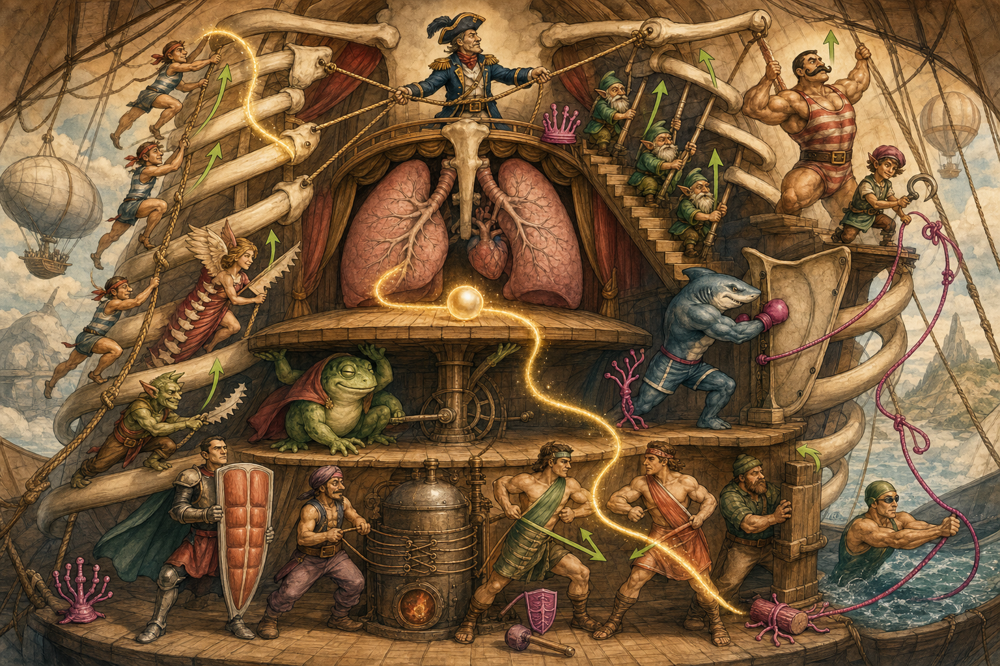
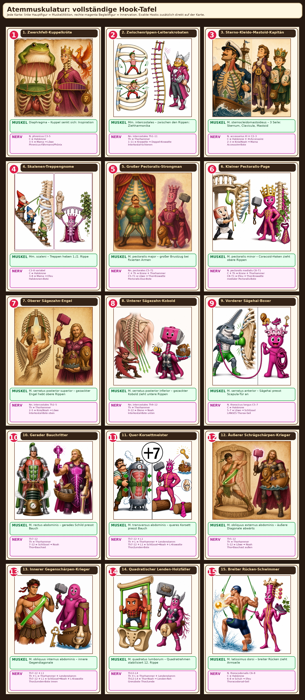

Großes Gesamtbild: das Atem-Theater
Die 15 Figuren leben in derselben Szene: Rippen-Luftschiff, Bühnenboden, Lungenkammer, Seile, Treppen, Bauchdeck und Rücken-Zone. Die roten Nummern sind anklickbar; die Faktenbox liefert die exakte Innervation.

Detail-Atlas: vollständige Hook-Tafel mit lesbarer Innervation
Hier bleiben die 15 kontrollierten Einzelbilder als Lern-Zoom erhalten. Diese Tafel ist bewusst genauer/lesbarer als das große Stimmungsbild: C/Th/L, Range-Endpunkte und Nerven stehen deterministisch im Bild.

Wahrheitslayer: Figuren, Muskeln, Innervation
| # | Figur / Muskel | Innervation | Hook-Code | Muskelaktion |
|---|---|---|---|---|
| 1 | Zwerchfell-Kuppelkröte Diaphragma | N. phrenicus C3–5 | C = Halskrone 3–5 = Mama → Löwe Phrenicus-Fährmann/Phönix | Kuppel senkt sich: Inspiration |
| 2 | Zwischenrippen-Leiterakrobaten Mm. intercostales | Nn. intercostales Th1–11 | Th = Thorhammer 1–11 = Krawatte → Doppel-Krawatte Interkostal-Schienen | zwischen den Rippen: Ziehharmonika |
| 3 | Sterno-Kleido-Mastoid-Kapitän M. sternocleidomastoideus | N. accessorius XI + C2–3 | C = Halskrone + XI-Accessoire 2–3 = Knie/Noah → Mama Accessoire-Bote | 3 Seile: Sternum, Clavicula, Mastoid |
| 4 | Skalenen-Treppengnome Mm. scaleni | C3–8 variabel | C = Halskrone 3–8 = Mama → Efeu Halskronen-Bote | Treppen heben 1./2. Rippe |
| 5 | Großer Pectoralis-Strongman M. pectoralis major | Nn. pectorales C5–T1 | C + Th = Krone + Thorhammer C5–T1 = Löwe → Thor-Krawatte Pectoralis-Duo-Bote | großer Brustzug bei fixierten Armen |
| 6 | Kleiner Pectoralis-Page M. pectoralis minor | N. pectoralis medialis C8–T1 | C + Th = Krone + Thorhammer C8–T1 = Efeu → Thor-Krawatte medialer Pectoralis-Bote | Coracoid-Haken zieht obere Rippen |
| 7 | Oberer Sägezahn-Engel M. serratus posterior superior | Nn. intercostales Th2–5 | Th = Thorhammer 2–5 = Knie/Noah → Löwe Interkostal-Bote oben | gezackter Engel hebt obere Rippen |
| 8 | Unterer Sägezahn-Kobold M. serratus posterior inferior | Nn. intercostales Th9–12 | Th = Thorhammer 9–12 = Biene → Noah Interkostal-Bote unten | gezackter Kobold zieht untere Rippen |
| 9 | Vorderer Sägehai-Boxer M. serratus anterior | N. thoracicus longus C5–7 | C = Halskrone 5–7 = Löwe → Schlüssel LANGES Thorax-Seil | Sägehai presst Scapula-Tür an |
| 10 | Gerader Bauchritter M. rectus abdominis | Th7–12 | Th = Thorhammer 7–12 = Schlüssel → Noah Thor-Bauchast | gerades Schild presst Bauch |
| 11 | Quer-Korsettmeister M. transversus abdominis | Th7–12 + L1 | Th + L = Thorhammer + Lendenstamm Th7–12 + L1 = Schlüssel→Noah + L-Krawatte Thor/Lenden-Bote | queres Korsett presst Bauch |
| 12 | Äußerer Schrägschärpen-Krieger M. obliquus externus abdominis | Th5–12 | Th = Thorhammer 5–12 = Löwe → Noah Thor-Bauchast außen | äußere Diagonale abwärts |
| 13 | Innerer Gegenschärpen-Krieger M. obliquus internus abdominis | Th7–12 + L1 | Th + L = Thorhammer + Lendenstamm Th7–12 + L1 = Schlüssel→Noah + L-Krawatte Thor/Lenden-Bote innen | innere Gegendiagonale |
| 14 | Quadratischer Lenden-Holzfäller M. quadratus lumborum | Th12–L4 | Th + L = Thorhammer + Lendenstamm Th12–L4 = Thor-Noah → Lenden-Reh Grenzbote Thor/Lende | Quadratrahmen stabilisiert 12. Rippe |
| 15 | Breiter Rücken-Schwimmer M. latissimus dorsi | N. thoracodorsalis C6–8 | C = Halskrone 6–8 = Schuh → Efeu Thoracodorsal-Seil | breiter Rücken zieht Armseile |
Aufbau
Oben: ein großes zusammenhängendes Bild wie ein Sketchy-/Meditricks-Gedächtnisort. Darunter: die exakten Einzel-Hooks, damit nichts Medizinisches durch Bildgenerierungs-Artefakte verloren geht. Besonders Serratus anterior bleibt als Sägehai mit langem Thorax-Seil und C5–7-Code verankert.